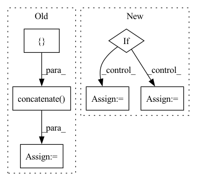

Pattern ID :27720

Before Change
def compute_alphas(self):
// Construct matrix for alpha calculation
objPts_w = np.array(self.objPts).transpose()[0]
mat_objPts_w = np.concatenate((objPts_w, np.array([np.ones((self.n))])), axis=0)
contPts_w = self.contPts_w.transpose()
mat_contPts_w = np.concatenate((contPts_w, np.array([np.ones((4))])), axis=0)
// Calculate Alpha
After Change
batched_ones = torch.ones((batch_size, 4, 1), dtype=contPts_w.dtype, device=contPts_w.device)
contPts_w = torch.cat((contPts_w, batched_ones), dim=-1)
if linear_least_square:
NotImplementedError("Linear least square method is not implemented yet.")
// Calculate Alpha TODO: CHECK if logic is correct, or change to general method
alpha = torch.bmm(torch.linalg.inv(contPts_w), objPts) // simple method
alpha = alpha.transpose()
else:
alpha = torch.linalg.solve(contPts_w, objPts, left=False) // General method
return alpha
In pattern: SUPERPATTERN
Frequency: 3
Non-data size: 6
Instances
Fragment ID: 82200750
Project Name: pypose/pypose
Commit Name: f6e65aa4066f56f1715c9ddfd89f5307c1ebe043
Time: 2023-02-24
Author: ztzhan1108@gmail.com
File Name: pypose/module/pnp.py
M Class Name: EPnP
N Class Name: EPnP
M Method Name: compute_alphas(4)
N Method Name: compute_alphas(1)
M Parent Class:
N Parent Class:
M File Name: pypose/module/pnp.py
N File Name: pypose/module/pnp.py
M Start Line: 127
M End Line: 140
N Start Line: 131
N End Line: 158
'>
Before Change
Instantiate the dataset
super().__init__(file_paths, img_transform=None)
all_img_history = []
all_trajectory_history = []
all_intent_pose = []
all_trajectory_future = []
for file_path in file_paths:
all_img_history.append(np.load(os.path.join(_CURRENT, f"{file_path}_image_history.npy")))
all_trajectory_history.append(torch.from_numpy(np.load(os.path.join(_CURRENT, f"{file_path}_trajectory_history.npy"))))
all_trajectory_future.append(torch.from_numpy(np.load(os.path.join(_CURRENT, f"{file_path}_trajectory_future.npy"))))
all_intent_pose.append(torch.from_numpy(
np.load(os.path.join(_CURRENT, f"{file_path}_intent_pose.npy"))))
img_history: np.ndarray = np.concatenate(all_img_history)
trajectory_history = torch.cat(all_trajectory_history)
intent_pose = torch.cat(all_intent_pose)
trajectory_future = torch.cat(all_trajectory_future)
self.items = list(zip(img_history, trajectory_history, intent_pose, trajectory_future))
self.img_transform = img_transform
After Change
if dataset_type == "train":
self.data_size = data_sizes[0]
elif dataset_type == "val":
self.data_size = data_sizes[1]
else:
self.data_size = data_sizes[2]
self.img_transform = img_transform
'>
Fragment ID: 82200782
Project Name: xushenlz/parksim
Commit Name: 07084f704d2db178c239bfda3fcafe486da20f74
Time: 2022-04-22
Author: lacayomatt@gmail.com
File Name: python/parksim/trajectory_predict/intent_transformer/dataset.py
M Class Name: IntentTransformerDataset
N Class Name: IntentTransformerDataset
M Method Name: __init__(3)
N Method Name: __init__(3)
M Parent Class: Dataset
N Parent Class: BaseTransformerDataset
M File Name: python/parksim/trajectory_predict/intent_transformer/dataset.py
N File Name: python/parksim/trajectory_predict/intent_transformer/dataset.py
M Start Line: 83
M End Line: 98
N Start Line: 45
N End Line: 66
'>
Before Change
keep = nms(valid_boxes, valid_scores, nms_thr)
if len(keep) > 0:
cls_inds = np.ones((len(keep), 1)) * cls_ind
dets = np.concatenate(
[valid_boxes[keep], valid_scores[keep, None], cls_inds], 1
)
final_dets.append(dets)
if len(final_dets) == 0:
return None
return np.concatenate(final_dets, 0)
After Change
def multiclass_nms(boxes, scores, nms_thr, score_thr, class_agnostic=True):
Multiclass NMS implemented in Numpy
if class_agnostic:
nms_method = multiclass_nms_class_agnostic
else:
nms_method = multiclass_nms_class_aware
return nms_method(boxes, scores, nms_thr, score_thr)
'>
Fragment ID: 82200776
Project Name: megvii-basedetection/yolox
Commit Name: e579d81e59694a9b8b2c2630e766e87374cb2cad
Time: 2021-08-26
Author: gezheng121@foxmail.com
File Name: yolox/utils/demo_utils.py
M Class Name: AnonimousClass
N Class Name: AnonimousClass
M Method Name: multiclass_nms(5)
N Method Name: multiclass_nms(4)
M Parent Class:
N Parent Class:
M File Name: yolox/utils/demo_utils.py
N File Name: yolox/utils/demo_utils.py
M Start Line: 49
M End Line: 68
N Start Line: 47
N End Line: 53